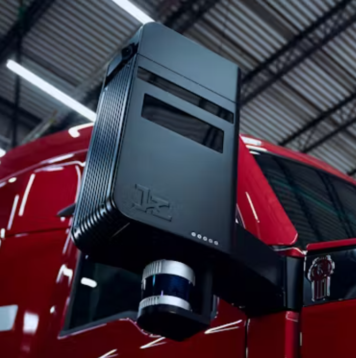

Hardware at Kodiak
Design and prototyping of sensor cleaning system for autonomous trucks

Designed and prototyped a liquid and air sensor cleaning system for Kodiak's fully autonomous trucks, optimizing pressure and angle across 12 nozzles for the LiDAR and WFOV/NFOV cameras.
Test Bench
Designed and brought up a modular sensor cleaning test bench, integrating an in-house PCB with C++ firmware and Python test scripts. Made validation repeatable and plug-and-play across multiple sensors, reducing setup time by 70%.
Pneumatics Enclosure
Designed a sheet metal enclosure in SolidWorks to house the pneumatics for the air cleaning system, applying DFMA principles to reduce on-road troubleshooting time by 30%, and mounted the full assembly onto the truck.
Validation
Validated the full system by capturing synchronized images and LiDAR PCAPs during operation.